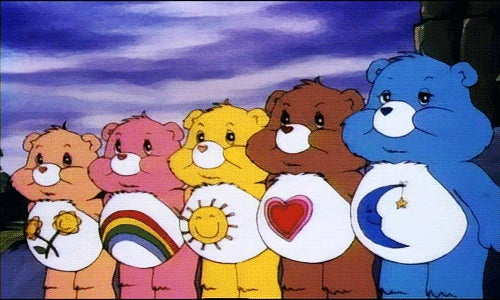
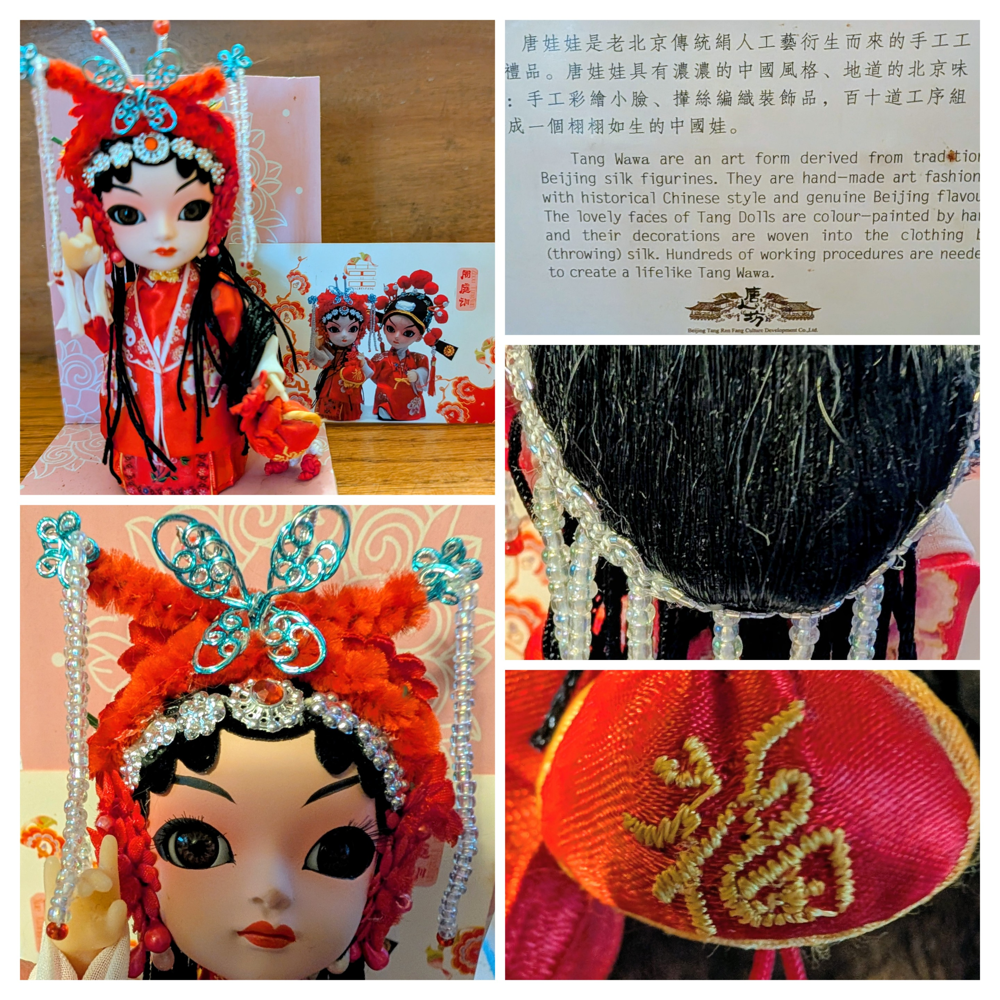
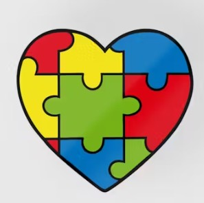
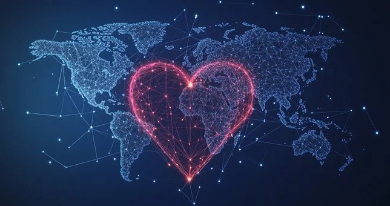

I didn’t grow up using the words “global citizen.” My world started out small: family, school, local community, the stories and news that filtered through the lens of U.S. media. It was easy to feel like the things happening in other countries were distant, interesting maybe, but separate from my daily life. The idea that my choices or my work might be connected to people on the other side of the world wasn’t something I thought about very often.
{kind=link}
At the same time, the shows I loved as a kid hinted at something bigger. 80s cartoons like Rainbow Brite and Care Bears constantly told stories about characters who learned to care about people beyond their immediate circle, who stepped outside their comfort zones to help others, and who discovered that their world was larger and more interconnected than they first believed. Those themes settled somewhere in the back of my mind, even when I didn’t have language for concepts like global citizenship.
Moments That Expanded My World
My sense of being part of a global community really began to grow through experience. Working in the bicycle import industry connected me with people in Japan, China, and other parts of the world. At first, it felt purely practical: supply chains, vendor relationships, logistics. But over time, those professional connections turned into personal ones: photos of cherry blossoms from Takashi in Japan, a Tang Wawa doll gifted from a colleague in China, emails that weren’t just about inventory but about families, seasons, and everyday life.
{kind=link}
Those relationships made it harder to think of “over there” as distant or abstract. When COVID-19 hit, our partners abroad went into lockdown before we did, and then sent us PPE out of concern for our safety. Their actions highlighted just how connected we were. A global crisis stopped being something on the news and became something shaping all of our lives at the same time, in different but related ways.
Challenging What I Was Taught
At the same time, I was becoming more aware of the limits of my own education and upbringing. So much of what I learned in school focused on the experiences, histories, and viewpoints of white people of European descent. Voices from other communities were largely missing or treated as side stories rather than central parts of the human narrative.
{kind=link}
Realizing that pushed me to rethink my role in the world. If I wanted to be a global citizen, I couldn’t be satisfied with a narrow version of history or a one-sided understanding of current events. I had to actively seek out other perspectives, listen to people whose lives don’t look like mine, and let that knowledge reshape how I see both my country and the wider world.
From Awareness to Responsibility
{kind=link}
My neurodivergence also shapes how I experience global spaces. In familiar, everyday environments, I often feel like the “odd one out,” reading situations differently or struggling with social expectations that seem effortless for others. But in intercultural settings, everyone is working to interpret new cues, bridge gaps in understanding, and adjust to unfamiliar norms. That shared uncertainty makes me feel less alone. The skills I’ve built to navigate my own sense of difference—observing carefully, asking questions, looking for patterns—become useful tools for connecting across cultures.
Still in Progress
Becoming a global citizen, for me, is an ongoing process rather than a finished identity. I’m still filling in gaps in my knowledge. I’m still unlearning assumptions. I’m still figuring out how to align my actions with my values in ways that are realistic and sustainable.
{kind=link}
But I know this much: I don’t want to live as if my world ends at the borders of my own country or the edges of my comfort zone. The people I’ve met, the stories I’ve heard, and the experiences I’ve had have all convinced me that our lives are intertwined. In the spirit of the shows that colored my childhood, I want to keep finding ways to add my own color to the shared picture—by learning, by listening, and by choosing connection over indifference.